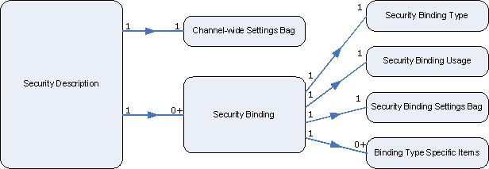

title: Security Description description: A security desciption is represented by a WS_SECURITY_DESCRIPTION structure, and an instance of a security description is supplied when you call the WsCreateChannel function to create a secure channel or the WsCreateListener function to create a listener. ms.assetid: 252418fc-dad4-43f4-a5e2-38055da3779c keywords:
A security desciption is represented by a WS_SECURITY_DESCRIPTION structure, and an instance of a security description is supplied when you call the WsCreateChannel function to create a secure channel or the WsCreateListener function to create a listener.
The basic model of channel security is that a channel is secured with one or more security tokens. Reflecting this model, the WS_SECURITY_DESCRIPTION structure contains a list of security bindings, represented by WS_SECURITY_BINDING structures, and each security binding describes how one security token is obtained and used on the channel. The kind of security used on a channel is decided by the selection of security binding subtypes that are included in the security description.
Optional security settings that are specific to a security binding are specified as security binding settings in the security binding structure; however, channel-wide settings independent of security bindings are directly specified as security channel settings in the properties field of the security description itself.

The following API elements are used with security descriptions.
| Structure | Description |
|---|---|
| WS_SECURITY_DESCRIPTION | The top-level structure used to specify the security requirements for a channel (on the client side) or a listener (on the server side). |
Â
Â
Â